Mosteiro de Santa Maria da Vitória
O ex-líbris da Vila da Batalha e um dos mais importantes monumentos nacionais, símbolo da identidade portuguesa e motor do desenvolvimento local.
Classificado em 1983 como Património Mundial da Humanidade, reconhecendo o seu valor histórico e arquitetónico excepcional.
Construído entre 1386 e 1517 para celebrar a vitória portuguesa na Batalha de Aljubarrota (1385), é um dos maiores tesouros da arquitetura gótica portuguesa.
Em 2025, tornou-se o 3.º monumento mais visitado de Portugal, com mais de 300.000 visitantes anuais, superado apenas pelos Jerónimos e Torre de Belém.
O Mosteiro combina estilos gótico, manuelino e renascentista. Os Capítulos Imperfeitos são uma das mais impressionantes obras arquitetónicas portuguesas.
Os fundos europeus foram essenciais para a conservação e valorização do Mosteiro
Conservação e restauro
Modernização de infraestruturas
Obras de reabilitação
Centro de Interpretação
De gravura oitocentista a fotografia aérea dos nossos dias — um olhar sobre a evolução do Mosteiro da Batalha.
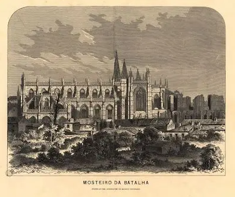
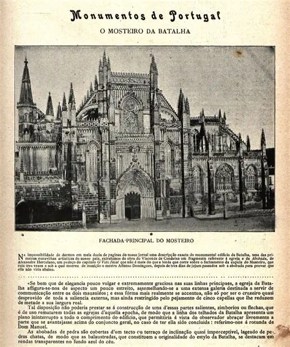
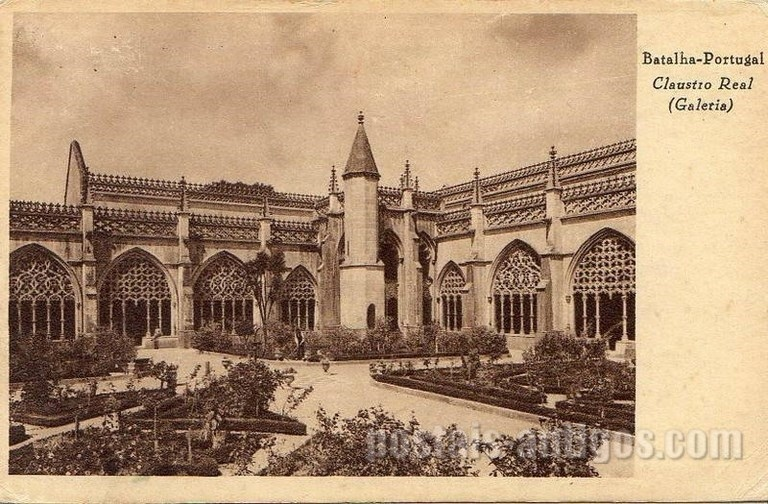
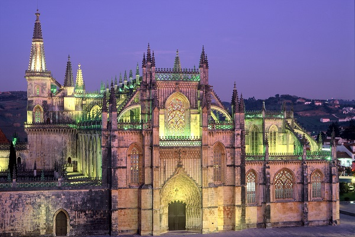
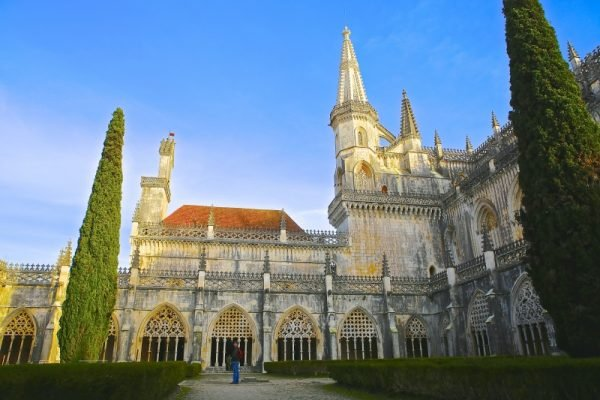
A arte manuelina e gótica esculpida em pedra — cada pormenor conta séculos de história.
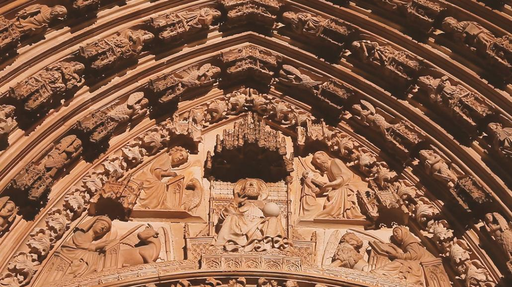
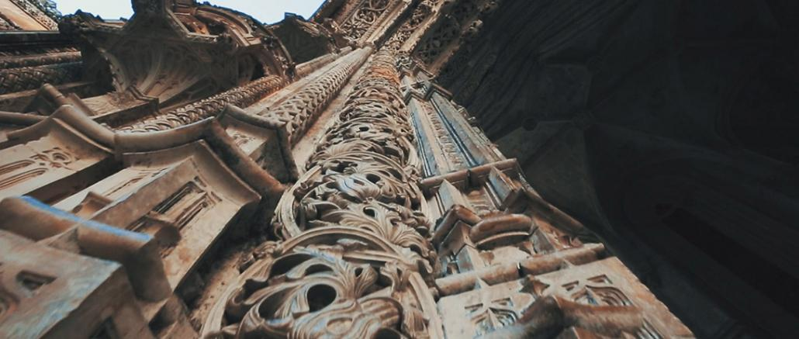
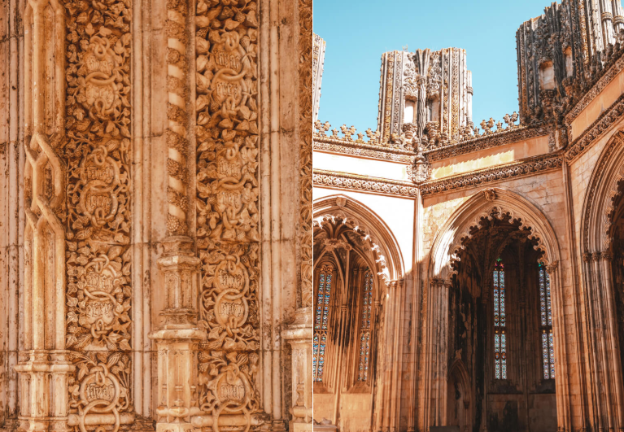
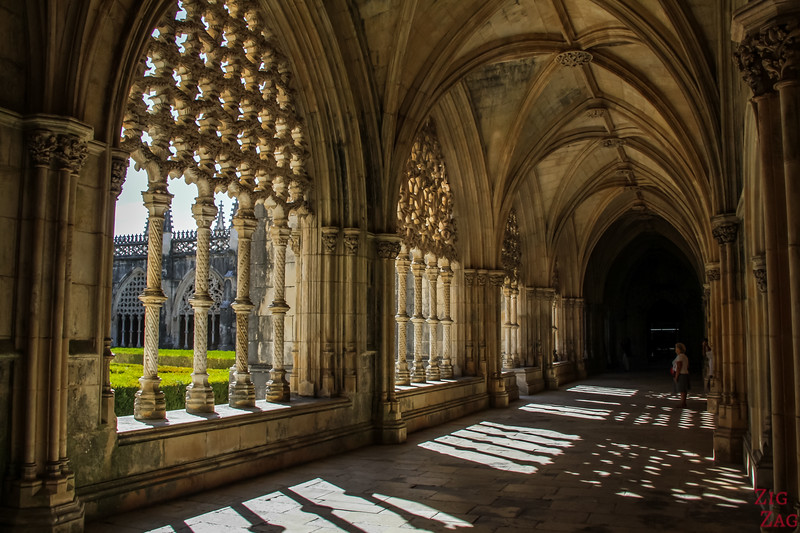
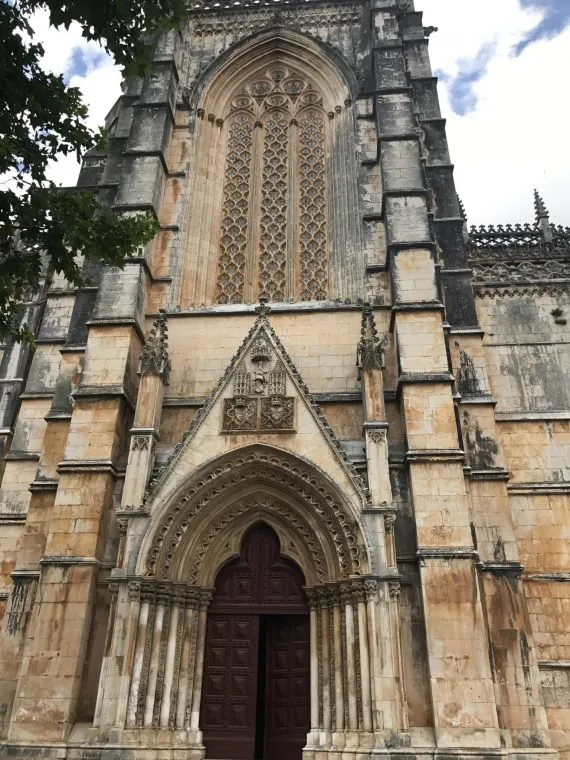
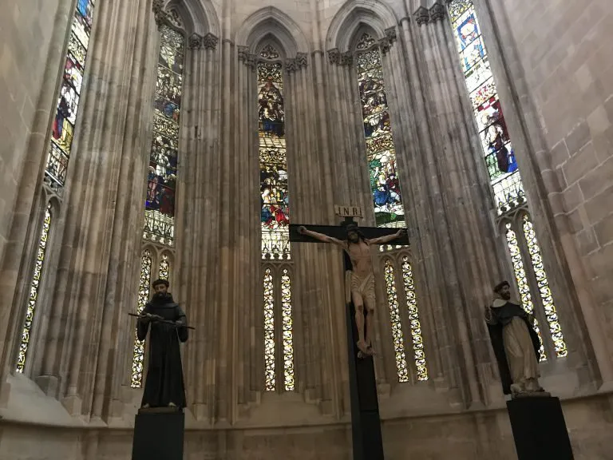
O Mosteiro visto do céu e a sua relação com a vila e a paisagem do centro de Portugal.
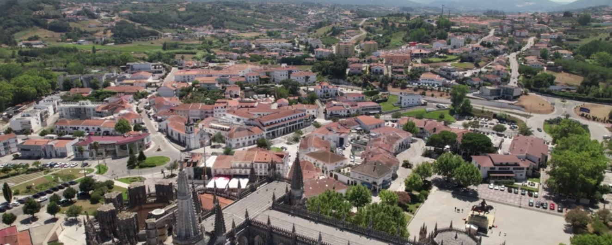
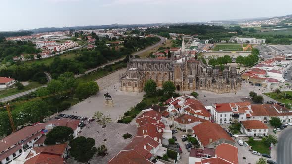
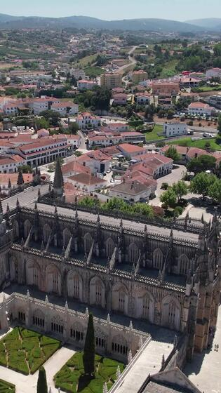
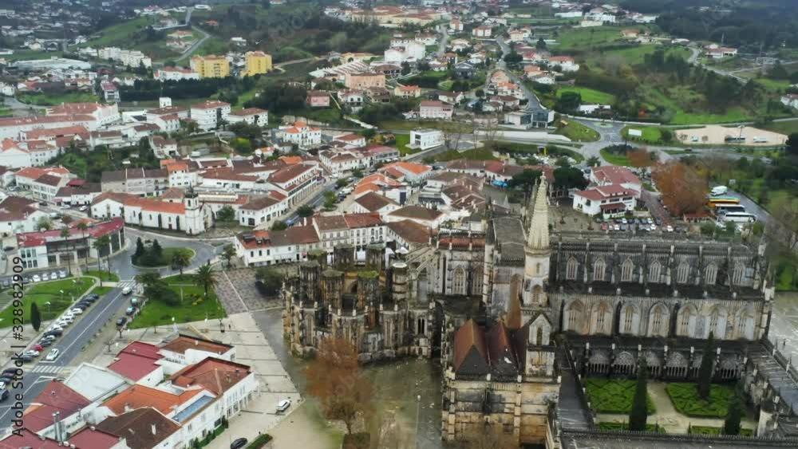
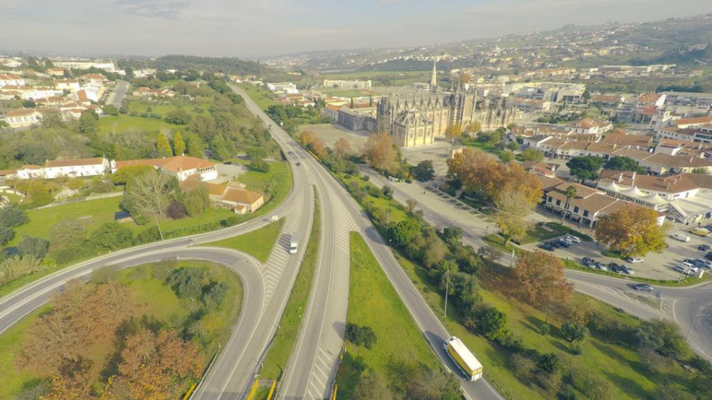
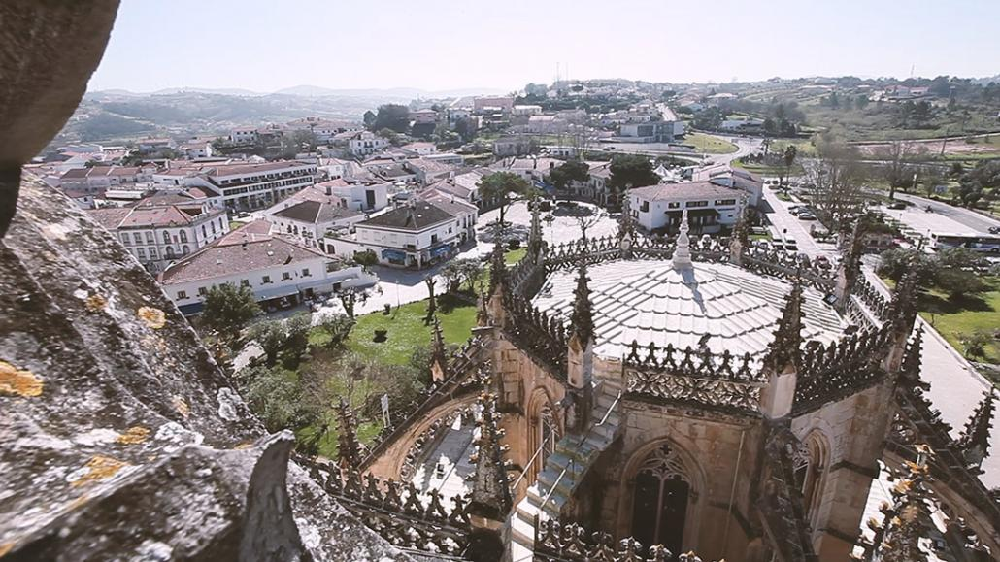
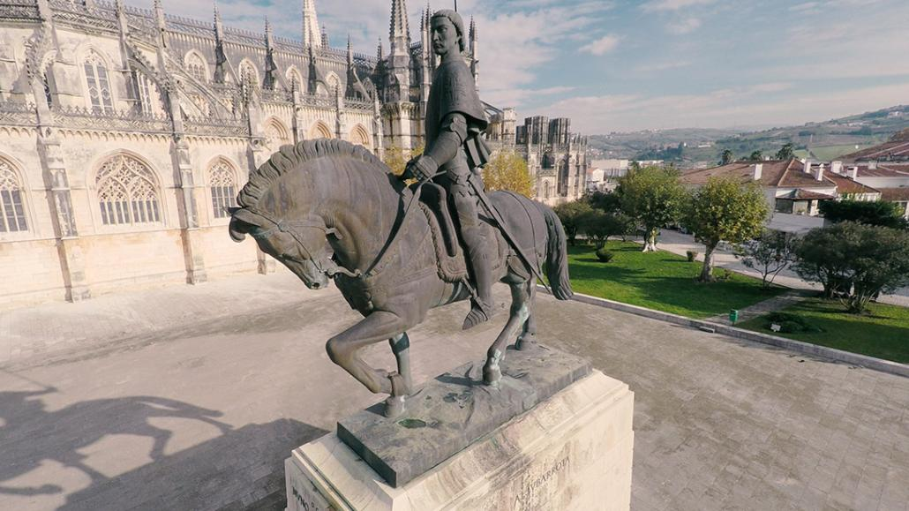
Para além do Mosteiro, a Batalha possui outros testemunhos patrimoniais que compõem a identidade da vila.
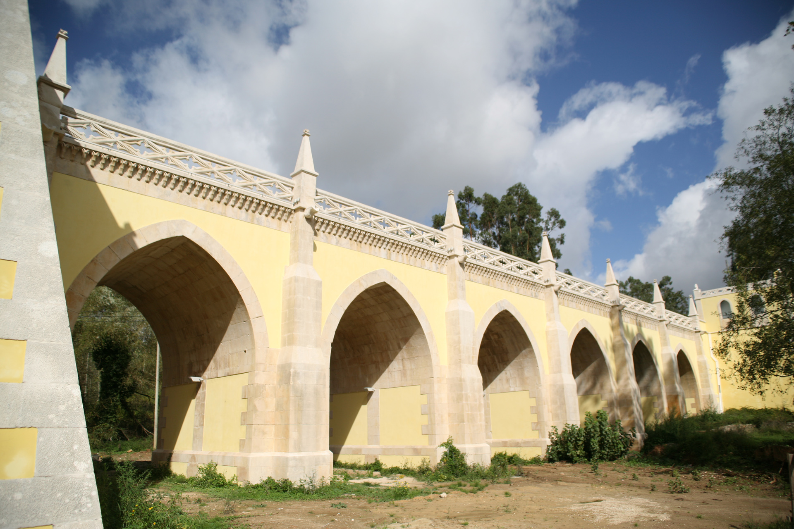
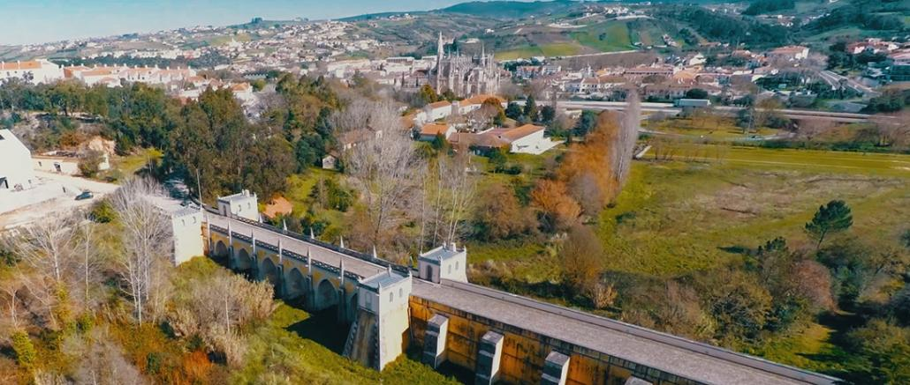
Praça Mouzinho de Albuquerque
2440-111 Batalha, Portugal
Outubro a Março: 9h00 - 17h30
Abril a Setembro: 9h00 - 18h30
Encerrado: 1 jan, Domingo de Páscoa, 1 maio, 25 dez
Acesso 52: Desde agosto de 2024, residentes em Portugal têm entrada gratuita aos monumentos nacionais aos domingos e feriados, mediante apresentação de documento de identificação.
"O Mosteiro da Batalha é a memória em pedra da independência de Portugal."